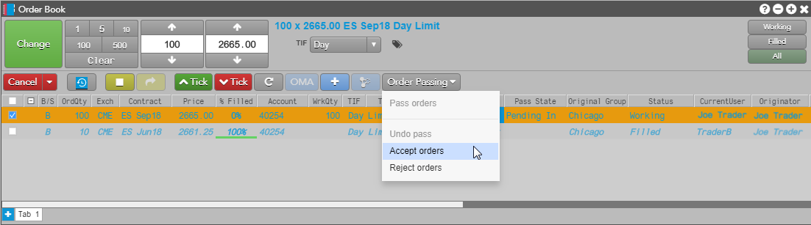
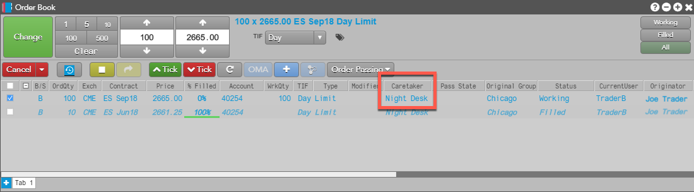
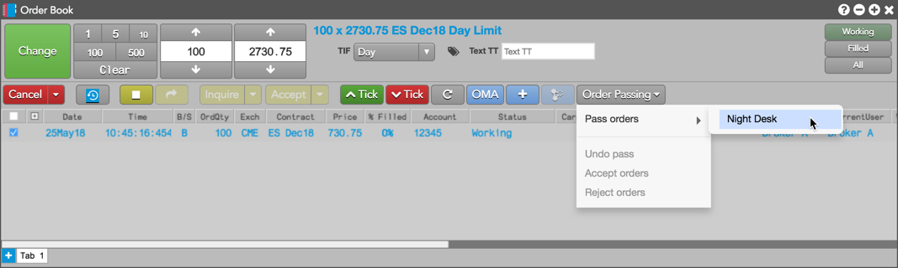
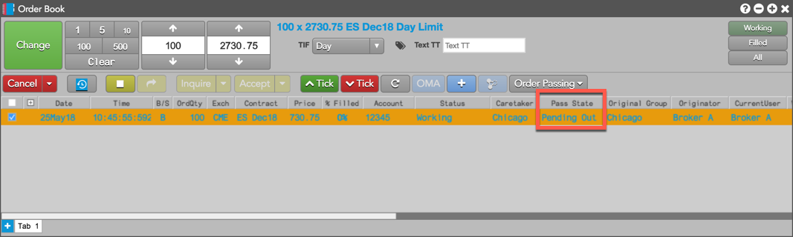
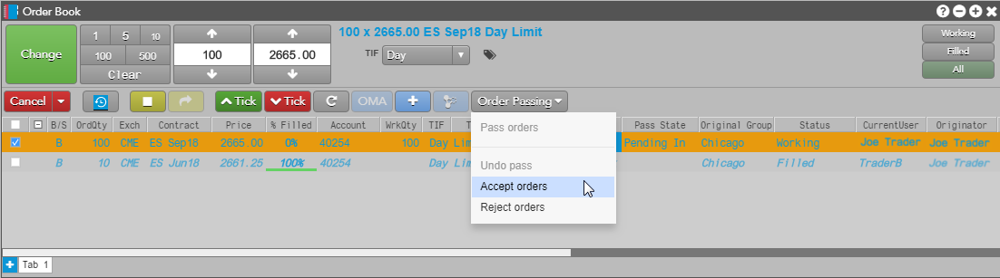
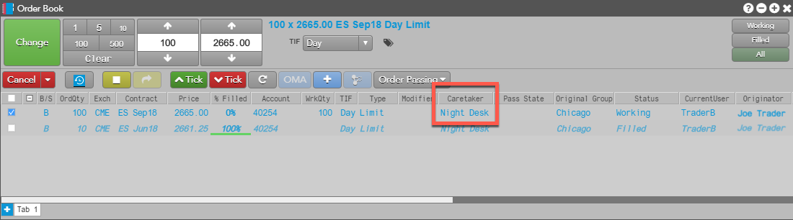

To reject the passed order, you can select Reject orders.
After accepting the passed order, your group name is displayed in the Caretaker column. The Original Group column shows the name of the user group that initially passed the order.

Using the Order Book widget, you can pass partially filled, held, modified, or unchanged working orders except for the following:
Note: The orders pane of the Orders and Fills widget also supports order passing.
To pass an order:

After initiating the order pass, "Pending Out" is displayed in the Pass State column. The row is highlighted in orange to indicate it is in the process of being passed.

Click Undo Pass if you want to cancel the pass and select a different "caretaker" group.
When an order is passed to you, the following is displayed in your Order Book widget:
To accept a passed order:

To reject the passed order, you can select Reject orders.
After accepting the passed order, your group name is displayed in the Caretaker column. The Original Group column shows the name of the user group that initially passed the order.
